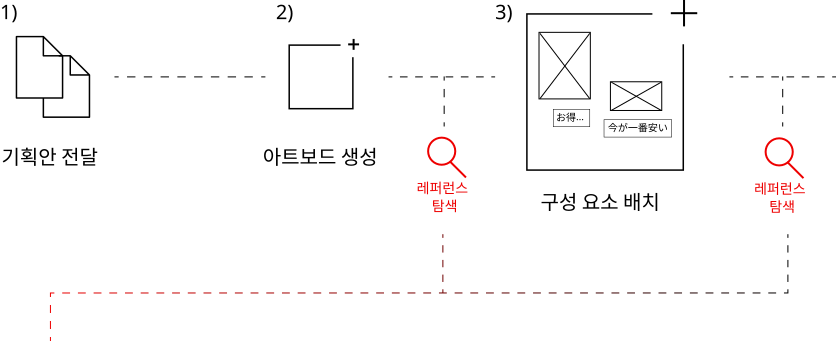

Pulio.
2026.05~PRESENTCONTRIBUTION | 기획안 기반 콘텐츠 디자인 100%
content designdesign automation
② JP translation
③ Reels video editing
(1) 9월 메가와리 주목 영상 AD
(2) 아마존 K-뷰티 팝업 영상
work flow.

problem !
요소를 순차적으로 배치하며 디자인할 경우,
새로운 요소가 추가될 때마다 레이아웃을 반복적으로 재조정해야 했습니다.
solution
디자인 자동화 스킬을 제작해, workflow를 효율적으로 개선했습니다.
디자인 자동화 과정
*실제 업무 자료 및 코드는 사용하지 않았으며, 포트폴리오를 위해 샘플 데이터 기반으로 별도 구현한 화면입니다.